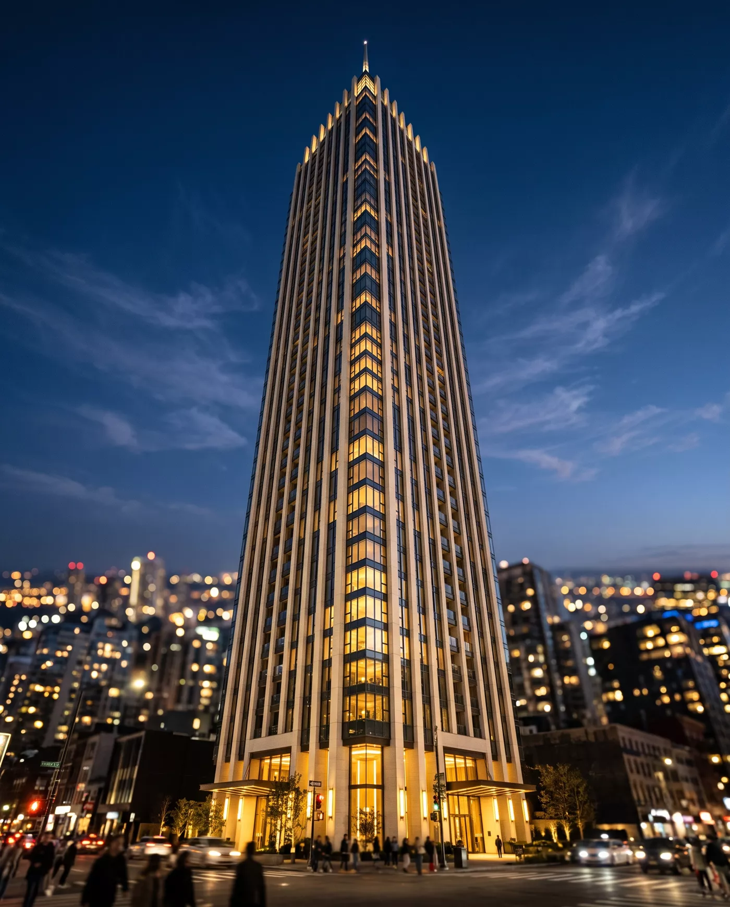
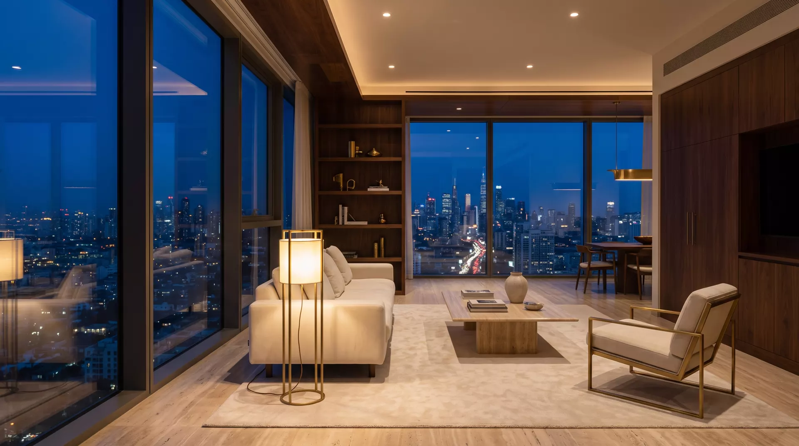

Residenz Linde
Etage 12 · Linie IDer erste Halt über den Dächern. Drei Zimmer, nach Südwesten offen — die Stadt noch nah genug, um sie zu hören, wenn man das Fenster öffnet.
Wohnen über der Stadt. Ein Turm, einundvierzig Etagen, eine Adresse — für die, die Ruhe nicht suchen müssen, weil sie oben beginnt.

Der erste Halt über den Dächern. Drei Zimmer, nach Südwesten offen — die Stadt noch nah genug, um sie zu hören, wenn man das Fenster öffnet.
Auf halber Höhe kippt die Perspektive: Man wohnt nicht mehr in der Stadt, man wohnt ihr gegenüber. Vier Zimmer, Eckverglasung, zwei Loggien.
Die letzte Linie vor dem Penthouse. Fünf Zimmer auf einer Ebene, raumhohe Verglasung an drei Seiten — abends liegt die Stadt als Lichtteppich darunter.

Eine Etage, ein Bewohner, kein Gegenüber. Dreihundertfünf Quadratmeter unter einer freien Decke, umlaufende Terrasse, privater Aufzugszugang. Das Penthouse wird nicht besichtigt — es wird vorgestellt, auf Anfrage und mit Zeit.
Jede Residenz teilt denselben ruhigen Kanon — wenige Materialien, sorgfältig gesetzt, gedacht für Jahrzehnte statt für Kataloge.
Landhausdielen in Überlänge, geölt statt versiegelt. Der Boden altert mit — und wird dabei besser.
Griffe, Armaturen, Lichtschalter. Unbehandelt, damit jede Hand ihre Patina hinterlassen darf.
Bäder und Fensterbänke aus cremefarbenem Stein, sandgestrahlt, fugenarm verlegt.
Mineralische Wände, die atmen. Kein Weiß aus dem Eimer, sondern ein warmes, tiefes Steinweiß.
Dreifach isoliert, schallentkoppelt. Die Stadt bleibt Bild — bis man sie hereinlassen will.
Flächenheizung, kontrollierte Lüftung, Beschattung nach Sonnenstand. Alles da, nichts sichtbar.